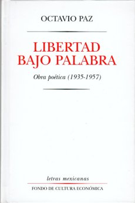

4:10 · 3 OPERE
I labirinti del cuore. Capitolo II. Quid agis cor meum
Il filo del discorso
La lettura del secondo capitolo di I labirinti del cuore indaga il rapporto fra cuore, corpo e spirito. Il cuore appare insieme intimo e infedele, capace di affidarsi all’altro e di portare il peso della sofferenza amorosa. Un verso attribuito a Octavio Paz introduce l’indivisibilità della verità; gli esempi di Romeo e Giulietta, Dante e Beatrice, Petrarca e Laura accompagnano l’idea dell’amore come ricerca di una parte necessaria alla propria completezza. Il finale torna alla profondità dell’essere umano e ai limiti di ogni tentativo di definirlo.
I libri nel discorso

I labirinti del cuore
Note sul riferimento
Copertina: Lulu.com · edizione commerciale ISBN 9781105055430
Immagine associata all’ISBN 9781105055430 nei cataloghi commerciali. Le schede riportano date discordanti 2011/2012: l’anno non viene convalidato. Non viene equiparata all’indicazione editoriale pronunciata nel video. La precedente qualificazione bibliografica resta invariata.
Il relatore annuncia I labirinti del cuore, Viaggio per terre sconfinate e Ilotempore 2011; seguono il numero del capitolo e Quid agis cor meum.

Refranes
Identificazione probabile
Note sul riferimento
Copertina: Fondo de Cultura Económica, Letras Mexicanas, 1995 (3ª edizione)
Il catalogo dell'editore documenta l'inclusione di Semillas para un himno in Libertad bajo palabra; il catalogo fonografico UNAM identifica Refranes in Semillas para un himno. Copertina illustrativa della raccolta, non attribuita al video. L'identificazione del testo citato nel video resta probabile.
Il relatore richiama un verso di Octavio Paz e la formula resa in italiano come verità indivisibile.

Romeo e Giulietta
Identificazione probabile
Note sul riferimento
Copertina: BUR / Rizzoli, 2023; traduzione di Carmen Gallo
Copertina dell’edizione con testo inglese a fronte, introduzione, note e nuova traduzione di Carmen Gallo. Edizione scelta come riferimento iconografico; nessuna edizione è confermata nel video. L’identificazione dell’opera nel video resta probabile.
A 155,9–163,03 Romeo è descritto come incapace di volere altri che Giulietta dopo averla incontrata.